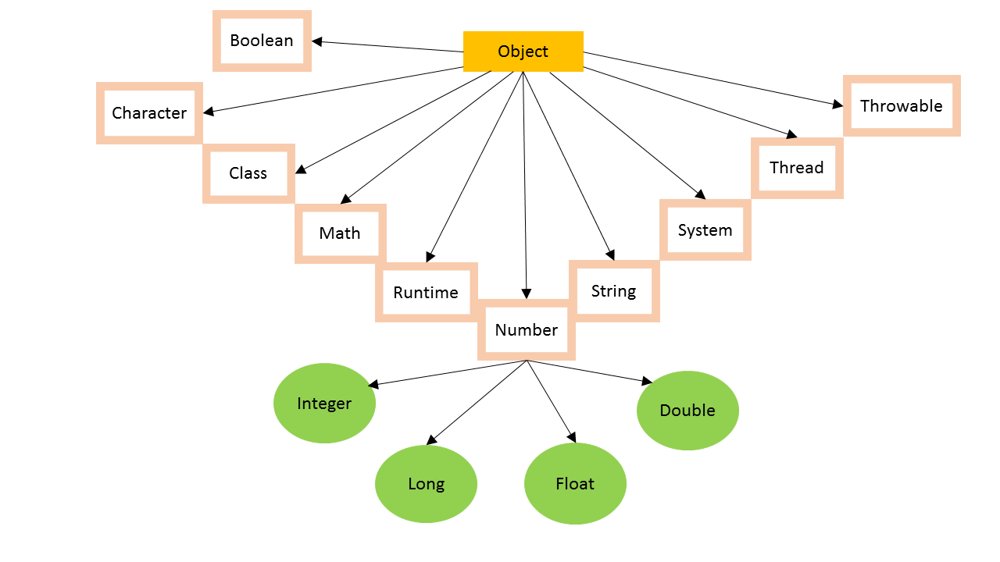

Java- Object
* Introduction
Class Object is the root of the class hierarchy. Every class has Object as a superclass. All objects, including arrays, implement the methods of this Object class.
The java.lang package contains the collection of base types (language types). This is where you'll find the declarations of Object (the root of the class hierarchy) and
Class, plus threads, exceptions, wrappers for the primitive data types, and a variety of other fundamental classes.
Following diagram shows the classes in java.lang, not considering error and exception classes.

There are a large number of methods defined in the java.lang.Object summarised as:
 * Class Declaration
* Class Declaration
Following is the way to declare java.lang.Object class:
public class Object
* Class Constructor
Object() is the single constructor.
* Class Methods
1.
clone:-
protected Object clone() throws CloneNotSupportedException
It creates and returns a copy of this object. The precise meaning of "copy" may depend on the class of the
object. For any object x, the expression :
x.clone()!=x will be true, and the expression:
x.clone().getClass()==x.getClass() will be true.
2.
equals:-
public boolean equals(Object obj)
It indicates whether some other object is "equal to" this one. The equals method for class Object implements
the most discriminating possible equivalence relation on objects; that is, for any non-null reference values
x and y.
This method returns true if and only if x and y refer to the same object (x==y has the value true).
3.
finalize:-
public void finalize() throws Throwable
This method is called by the garbage collector on an object when garbage collection sees that there is no
more references to the object. The general
contract of finalize is that it is invoked if and when the JVM has
determined that there is no longer any means by
which this object can be accessed. The finalize method may
take any action, including making this object available to other threads.
But the usual purpose of it is to
perform cleanup functions.
4.
getClass:-
public final Class<?> getClass
It returns the runtime class of this Object. The returned Class object is the object that is locked by
static synchronized methods.
5.
hashCode:-
public int hashCode()
It returns the hash code balue for the object. This method is beneficial for hash tables and Hash Map. As
much as is reasonably practical, the hashCode method defined by class Object does return distinct integers
for distinct objects. (This is typically implemented by converting the internal address of the object into an
integer,
but this implementation technique is not required by the Java programming language.)
6.
notify:-
public final void notify()
It wakes up a single thread that is waiting on this object's monitor. If any threads are waiting on this object,
one of them is chosen to be awakened. This choice is completely arbitrary. This method should only be called by
a thread that is the owner of this object's monitor.
7.
notifyAll:-
public final void notifyAll()
It wakes up all threads that are waiting on this object's monitor. A thread waits on an object's monitor by
calling one of the wait methods.
The awakened threads will not be able to proceed until the current thread
relinquishes the lock on this object.This method should only be called by a thread that is the owner of
this object's monitor.
8.
toString:-
public String toString()
It returns a string representation of the object. In general, the toString method returns a string that
"textually represents" this object. The result should be a concise but informative representation that is easy
for a person to read. It is recommended that all subclasses override this method.
9.
wait(long timeout):-
public final void wait(long timeout)
throws InterruptedException
It causes the current thread to wait until either another thread invokes the notify() method or the notifyAll()
method for this object, or a specified amount of time has elapsed.
The current thread must own this object's
monitor.
10.
wait:-
public final void wait()
throws InterruptedException
It causes the current thread to wait until another thread invokes the notify() method or the notifyAll() method for this
object. In other words, this method behaves exactly as if it simply performs the call wait(0).
The current thread must
own this object's monitor. The thread releases ownership of this monitor and waits until another thread notifies
threads waiting on this object's monitor to wake up either through a call to the notify method or the notifyAll method.
The thread then waits until it can re-obtain ownership of the monitor and resumes execution.
11.
wait(long timeout, int nanos):-
public final void wait(long timeout,
int nanos)
throws InterruptedException
It makes the current thread to wait until another thread invokes the notify() method or the notifyAll() method for this
object, or some other thread interrupts the current thread, or a certain amount of real time has elapsed.
This method
is similar to the wait method of one argument, but it allows finer control over the amount of time to wait for a
notification before giving up. The amount of real time, measured in nanoseconds, is given by:
1000000*timeout+nanos. In all other respects, this method does the same thing as the method wait(long) of one
argument. In particular, wait(0, 0) means the same thing as wait(0).
The current thread must own this object's
monitor.
Click here to download the examples: